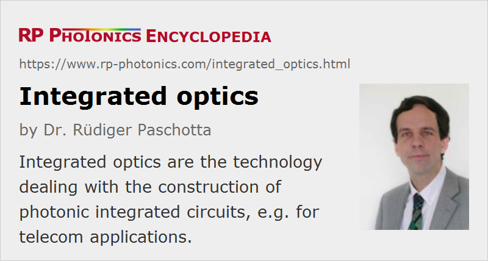

Integrated Optics
Definition: the technology dealing with the construction of photonic integrated circuits
German: integrierte Optik
How to cite the article; suggest additional literature
Author: Dr. Rüdiger Paschotta
Integrated optics is a technology which aims at constructing so-called integrated optical devices or photonic integrated circuits or planar lightwave circuits, containing several or many optical components which are combined to fulfill some more or less complex functions. Such components can e.g. be optical filters, modulators, amplifiers, lasers and photodetectors. They can, e.g., be fabricated on the surface of some crystalline material (such as silicon, silica, or LiNbO3) and connected with waveguides.
The original inspiration of integrated optics came from the technology of electronic integrated circuits, which has shown rapid development over several decades and has led to amazing achievements, such as complex and powerful microprocessors containing many millions of transistors, specialized signal processors and computer memory chips with huge data storage capacity. Unfortunately, integrated optics has not been able to match the progress of microelectronics in terms of the complexity of possible devices. This results from a number of technical limitations:
- While electronic circuits can contain extremely small wires, optical components need to be connected via waveguides, the dimensions of which usually cannot be much smaller than the wavelength, and which often cannot tolerate very sharp bends. (This limitation might be eliminated by using waveguides with very high index contrast, e.g. nanofibers or photonic bandgap waveguides.)
- Optical connections, e.g. between waveguides, and couplers are significantly more critical than electrical connections.
- Waveguides, device connections and passive optical components exhibit optical losses, which often need to be compensated with optical amplifiers. These are larger and more complex than electronic amplifiers based on transistors.
- Some types of optical components can hardly be miniaturized.
For these reasons, integrated optical circuits have not reached by far the complexity of electronic integrated circuits. However, devices of moderate complexity can still be useful for example for optical fiber communications, where they can host multiple data transmitters and/or receivers, consisting of distributed feedback lasers, optical modulators, photodiodes, and optical filters (e.g. in the form of arrayed waveguide gratings). Recently, new hope for a powerful and cost-effective integrated optical technology has arisen from developments in silicon photonics.
Questions and Comments from Users
Here you can submit questions and comments. As far as they get accepted by the author, they will appear above this paragraph together with the author’s answer. The author will decide on acceptance based on certain criteria. Essentially, the issue must be of sufficiently broad interest.
Please do not enter personal data here; we would otherwise delete it soon. (See also our privacy declaration.) If you wish to receive personal feedback or consultancy from the author, please contact him e.g. via e-mail.
By submitting the information, you give your consent to the potential publication of your inputs on our website according to our rules. (If you later retract your consent, we will delete those inputs.) As your inputs are first reviewed by the author, they may be published with some delay.
Bibliography
| [1] | P. K. Tien, “Light waves in thin films and integrated optics”, Appl. Opt. 10 (11), 2395 (1971), doi:10.1364/AO.10.002395 |
| [2] | G. I. Stegeman and C. T. Seaton, “Nonlinear integrated optics”, J. Appl. Phys. 58 (12), R57 (1985), doi:10.1063/1.336205 |
| [3] | G. I. Stegeman et al., “Third order nonlinear integrated optics”, IEEE J. Lightwave Technol. 6 (6), 953 (1988), doi:10.1109/50.4087 |
| [4] | L. Thylen, “Integrated optics in LiNbO3: recent developments in devices for telecommunications”, IEEE J. Lightwave Technol. 6 (6), 847 (1988), doi:10.1016/0040-6090(89)90827-4 |
| [5] | I. Baumann et al., “Er-doped integrated optical devices in LiNbO3”, J. Sel. Top. Quantum Electron. 2 (2), 355 (1996), doi:10.1109/2944.577395 |
| [6] | B. Jalali et al., “Advances in silicon-on-insulator optoelectronics”, J. Sel. Top. Quantum Electron. 4 (6), 938 (1998), doi:10.1109/2944.736081 |
| [7] | K Okamoto, “Recent progress of integrated optics planar lightwave circuits”, Opt. Quantum Electron. 31 (2), 107 (1999), doi:10.1023/A:1006975415469 |
See also: photonic integrated circuits, silicon photonics, optoelectronics, nanofibers, optical fiber communications
and other articles in the category photonic devices
|  |
If you like this page, please share the link with your friends and colleagues, e.g. via social media:
These sharing buttons are implemented in a privacy-friendly way!